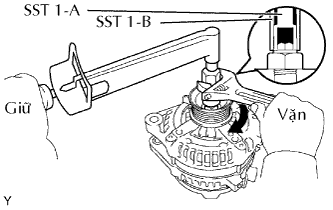
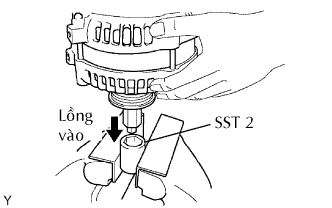
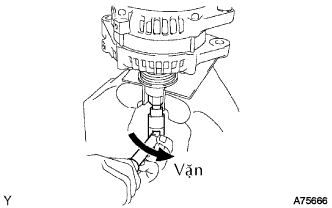
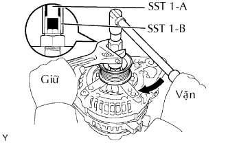
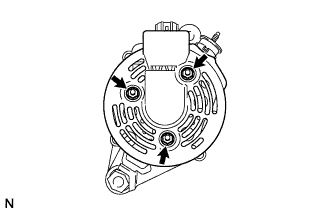
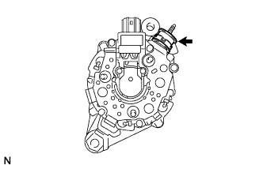
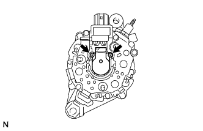
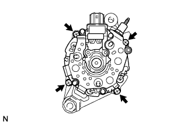
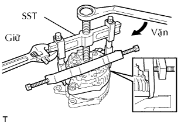

MÁY PHÁT > THÁO RỜI |
| 1. THÁO PULI MÁY PHÁT |
|  |
| Hạng mục | Mã số |
| SST 1-A và 1-B | 09820-06010 |
| SST 2 | 09820-06020 |
Giữ SST (1-A) bằng cân lực, và xiết chặt SST (1-B) cùng chiều kim đồng hồ đến mômen xiết tiêu chuẩn.
|  |
Kẹp SST 2 lên êtô.
Lắp SST (1-A) và (1-B) vào SST 2, và gắn đai ốc bắt puli vào SST 2.
|  |
Nởi lỏng đai ốc bắt puli bằng cách vặn SST (1-A) theo hướng như chỉ ra trên hình vẽ.
Tháo máy phát ra khỏi SST2.
|  |
Vặn SST (1-B), và tháo SST (1-A) và (1-B).
Tháo đai ốc bắt puli và puli máy phát.
| 2. THÁO NẮP PHÍA SAU MÁY PHÁT |
|  |
Tháo 3 đai ốc và nắp che phía sau.
| 3. THÁO CÁCH ĐIỆN CỦA CỰC |
|  |
Tháo cách điện của cực.
| 4. THÁO CỤM GIÁ ĐỠ CHỔI THAN MÁY PHÁT |
|  |
Tháo 2 vít và giá đỡ chổi than.
| 5. THÁO CỤM STATO (CUỘN DÂY MÁY PHÁT) |
|  |
Tháo 4 bulông.
|  |
Dùng SST, hãy tháo stato ra.
| 6. THÁO CỤM RÔTO MÁY PHÁT |
Tháo vòng đệm.
Tháo rôto ra khỏi nắp đầu phía sau máy phát.